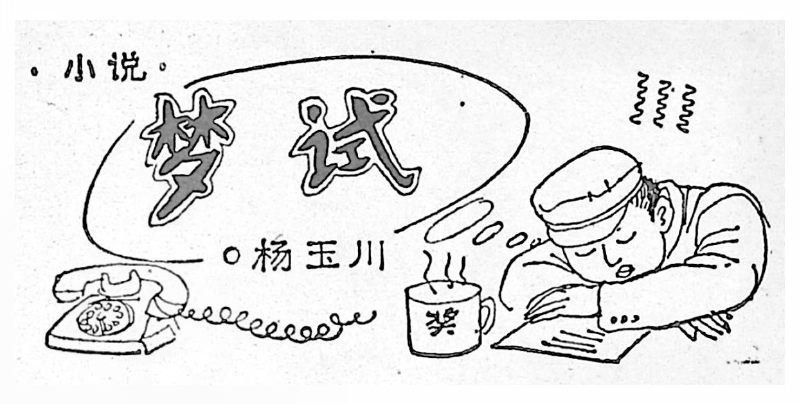

贾□ 《人事》1987年第10期（总第25期），封三
梦试（题图）
A Test in a Dream (header drawing)
- Text in the drawing
- 梦试 / 奖
A Test in a Dream / Prize - Passage illustrated
他在大腿上掐了一把，竭力抬起沉重的头颅，意念倒还清楚：坚持！再坚持最后五分钟！明天，省里的考察组就来了，这回不同以往，采取百问记分制的形式面对面考察。
He pinched his thigh and struggled to lift his heavy head; his mind was still clear: hold on! Hold on for five more minutes! Tomorrow the provincial evaluation team arrives, and this time it's different — a face-to-face test, a hundred questions, scored by points.From the short story 梦试 (“A Test in a Dream”) by Yang Yuchuan, on the same page. 杨玉川《梦试》（小说），同页
- Description
- Header drawing for the story: an official in a cap has fallen asleep over his notes, a telephone and a prize mug beside him, the story's title floating in his dream.
- Note
- In the story a deputy Party secretary cramming facts about his city for an inspection team's hundred-question test dreams that he is quizzed on the names of ordinary staff and the office numbers in his own building — and can answer only about his car.
- Artist
- Jia □ 贾□
- Published in
- 《人事》1987年第10期（总第25期）, inside back cover
- Themes
- Formalism · Story illustrations

Cite
Jia □, “梦试（题图）” [A Test in a Dream (header drawing)], Renshi (Personnel) 《人事》, 1987, no. 10, inside back cover.